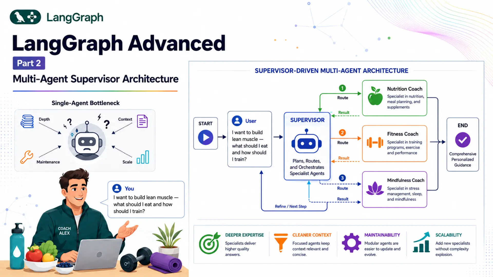
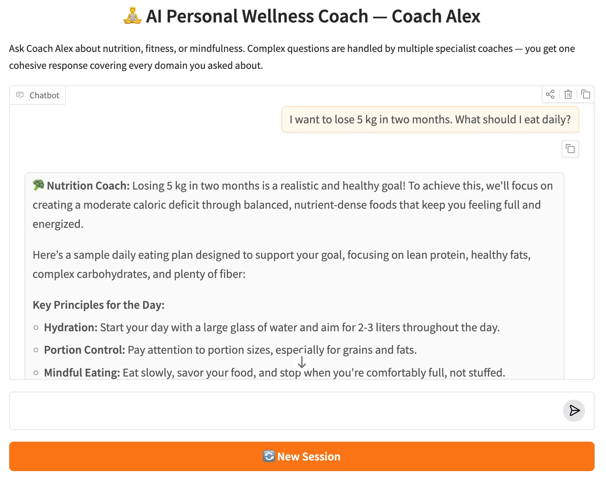

LangGraph Advanced: Part 2 — Multi-Agent Supervisor Architecture

📚 Table of Contents
- 1. Why Multi-Agent Architectures?
- 1.1 The Single-Agent Bottleneck
- 1.2 The Supervisor Pattern
- 1.3 Our Scenario: AI Personal Wellness Coach
- 2. Installation & Setup
- 3. Understanding the Supervisor Pattern
- 4. State Design
- 5. Building the Supervisor Agent
- 6. Building the Specialist Agents
- 7. Assembling the Graph
- 8. Complete Example: AI Personal Wellness Coach
- 8.1 Architecture Overview
- 8.2 Project Structure
- 8.3 State (state.py)
- 8.4 Nodes (nodes.py)
- 8.5 Graph Assembly (graph.py)
- 8.6 Runner & Console Output
- 8.7 Graph Diagram
- 9. Web Interface
- 10. Conclusion
🤝 1. Why Multi-Agent Architectures?
By the end of the LangGraph Basics series, you could build a stateful chatbot with tool use, human-in-the-loop approval, and cross-session memory. Those are powerful ingredients — but they all share one underlying assumption: a single LLM node handles everything. The user asks a question, the agent thinks, and the agent responds. For narrow use cases that works perfectly. For real-world applications, it starts to break down.
Consider a wellness app. A user might ask: "I want to build lean muscle — what should I eat and how should I train?" A single generalist agent will attempt to answer both the nutrition and the fitness question in one go. The response will likely be acceptable, but shallow in both areas because the model is spreading its reasoning across two domains simultaneously. If you had a dedicated Nutrition Coach and a dedicated Fitness Coach — each fine-tuned on their domain through carefully crafted system prompts — they would each provide better, deeper, more contextually relevant advice.
That is the core insight behind multi-agent architectures: instead of one generalist handling everything, you compose a team of specialists. Each specialist focuses on what it knows best. A coordinator — the supervisor — decides who talks to the user and when.
🧱 The Single-Agent Bottleneck
A single LLM node becomes a bottleneck in three common scenarios:
Domain Depth
A single system prompt can't make an agent simultaneously expert in nutrition science, exercise physiology, and mindfulness research. Specialists carry deeper, more focused knowledge.
Context Pollution
When one agent handles everything, unrelated conversation history piles up and can confuse the model. Specialists each maintain a cleaner, domain-focused context.
Maintainability
Tuning a single monolithic prompt for all domains is brittle — changing one domain's instructions can break another. Each specialist has its own isolated prompt file.
Scalability
Adding a new domain means adding a new specialist node and updating the supervisor prompt — no changes to existing specialists. Monolithic agents require full rewrites.
🎯 The Supervisor Pattern
The supervisor pattern is the canonical multi-agent architecture in LangGraph. It has two types of components:
- Supervisor node — an LLM node that reads the full conversation history and decides which specialist to call next, or whether the question has been fully answered. The supervisor never adds a message visible to the user; it only controls routing.
- Specialist nodes — LLM nodes, each with a focused system prompt. When called, a specialist reads the full conversation, generates a domain-specific response, appends it to the message list, and hands control back to the supervisor.
The critical structural difference from basic conditional routing (covered in Basics Part 3) is the feedback loop. In conditional routing, the flow is: START → supervisor → specialist → END. In the supervisor pattern, every specialist routes back to the supervisor: START → supervisor → specialist → supervisor → ... → END. The supervisor re-reads the updated conversation — including the specialist's response — and decides the next step. This means a single user query can trigger multiple specialists in sequence.
📌 Key distinction: Conditional routing (blog_10) is rule-based and always takes exactly one hop. The supervisor pattern is LLM-driven and can take one or more hops depending on the complexity of the query.
🧘 Our Scenario: AI Personal Wellness Coach
Throughout this post we'll build Coach Alex — an AI Personal Wellness Coach. Users can ask Coach Alex about nutrition, fitness, mindfulness, or any combination. Here's why this scenario genuinely requires multi-agent architecture:
- A question like "What should I eat to lose weight?" needs a focused nutrition answer — the fitness agent shouldn't interfere.
- A question like "I want to build lean muscle — what should I eat and how should I train?" needs both a nutrition response and a fitness response, in sequence, each building on the other.
- A question like "I can't sleep because of work stress" needs a mindfulness response — neither nutrition nor fitness is relevant.
No rule-based router can handle all three scenarios correctly — it can't know from a single classification that the second query needs two specialists. The supervisor LLM reads the conversation after each agent responds and decides whether to call another specialist or stop. That dynamic reasoning is exactly what makes multi-agent necessary here.
⚙️ 2. Installation & Setup
This post uses Python 3.12. Verify your version before creating the virtual environment:
Create and activate a virtual environment named langgraph:
All posts in the LangGraph series share a single requirements.txt at the repo root. Install everything with:
Get a free Gemini API key at Google AI Studio. Create a .env file inside the langgraph/ root:
⚠️ Never commit .env to version control. Add it to .gitignore immediately.
Here is the complete project tree for this post:
config.py and llm.py are covered in Section 2.1. state.py in Section 4. nodes.py in Sections 5 and 6. graph.py in Section 7. The runner and app are walked through in Sections 8 and 9.
🔧 Configuring the LLM
config.py reads all settings from the .env file, making it trivial to tune the model name or temperature without touching any logic files:
llm.py wraps Google Gemini in a thin class. Every node that needs an LLM calls GeminiLLM().get_llm():
🧠 3. Understanding the Supervisor Pattern
Before writing any code, it's worth understanding exactly what makes the supervisor pattern different from the conditional routing you already know from Basics Part 3.
🔁 LLM-Based vs Rule-Based Routing
In Basics Part 3, the Customer Support Router used a classification node that invoked the LLM to label the message as billing, technical, or general. Then a separate Python function read that label and returned the correct node name. Once the specialist handled the message, the graph went directly to END. The entire flow was a straight line — always exactly one hop.
The supervisor pattern is fundamentally different. The routing decision is made by an LLM with structured output that reads the entire conversation history — including messages added by specialists in previous hops. After a specialist responds, control returns to the supervisor node, which re-reads the conversation and asks itself: "Has the question been fully answered? Should I call another specialist?" Only the LLM can make that contextual judgment. No Python function can.
| Aspect | Conditional Routing (blog_10) | Supervisor Pattern (this post) |
|---|---|---|
| Routing decision | Rule-based Python function | LLM with structured output |
| Hops per query | Always exactly 1 | 1 or more, dynamically decided |
| After specialist responds | Goes to END | Returns to supervisor |
| Multi-specialist queries | Not possible | Supervisor calls both in sequence |
| Reads previous agent output | No | Yes — full conversation history |
📋 Structured Output for Routing
The supervisor must always return a valid routing decision — it can't say "I think maybe nutrition?" or write a sentence explaining its reasoning. We enforce this with structured output: a Pydantic BaseModel that constrains the LLM's response to a fixed schema.
LangChain's with_structured_output() method wraps any chat model and forces it to return a typed object instead of free text. Under the hood, it uses the model's native tool-calling or JSON mode to guarantee schema compliance:
The Literal type in next_agent is critical. It tells the LLM that the only valid values are the four listed strings. The LLM cannot hallucinate a node name like "sleep_agent" or "DONE". The conditional router in graph.py can then use a simple dictionary mapping without any error-handling for unexpected values.
✅ Always use Literal for routing decisions. It prevents the LLM from inventing node names and makes the routing dictionary in your graph exhaustive by construction.
🔄 The Supervisor Loop
The loop is created by wiring the graph so that every specialist node has an outgoing edge back to the supervisor. Here is what the execution trace looks like for a multi-domain query:
🗂️ 4. State Design
WellnessState has exactly two fields — one for the conversation and one for routing:
The messages field uses the add_messages reducer from LangGraph (introduced in Basics Part 2), so every new message is appended rather than overwriting the list. All nodes — supervisor and specialists — read from this same list. This is how the supervisor can see what specialists have already said: their responses are ordinary AIMessage objects inside messages.
The next_agent field is a plain string with last-write-wins semantics (the default for fields without a reducer). The supervisor node is the only node that writes to it. Specialist nodes never touch it. The conditional router reads it to determine which edge to follow.
🔗 Design principle: Keep routing state separate from conversation state. messages is the shared blackboard that every agent reads and writes to; next_agent is a control signal that only the supervisor writes. Mixing them would make the graph logic harder to reason about.
We define WellnessState as our own TypedDict rather than using LangGraph's MessagesState shortcut, because we need the additional next_agent field for routing control. MessagesState only provides messages.
🎯 5. Building the Supervisor Agent
The supervisor is the heart of the multi-agent system. It has three components: a Pydantic schema that constrains its output, a node function that invokes the LLM, and a system prompt that describes the team and the routing rules.
📐 The SupervisorDecision Schema
We define a Pydantic model with two fields. next_agent uses Literal to enumerate every valid destination, including "FINISH". The reasoning field encourages the LLM to reason explicitly before committing to a choice — this acts as a lightweight chain-of-thought that tends to improve routing accuracy:
When the structured-output LLM processes a message, it always returns a SupervisorDecision instance. decision.next_agent is guaranteed to be one of the four valid strings. The conditional router can therefore use a simple dict mapping with no fallback needed.
🤖 The Supervisor Node
The supervisor node is deliberately minimal. It prepends the system prompt, invokes the structured LLM, and returns only the routing decision — it never adds a user-visible message:
Notice that the return dictionary only updates next_agent. It does not include a messages key, so the message list is untouched. The specialist nodes are the only ones that append to messages. This keeps the supervisor transparent to the user — they only see specialist responses.
💡 The supervisor reads the full state["messages"], which includes both the original user query and every specialist response added so far. After the nutrition agent responds, the supervisor sees the nutrition message in the list and uses that context when deciding whether to call the fitness agent next.
📝 The Supervisor Prompt
The supervisor prompt lives in prompts/supervisor.txt. It introduces the team, maps each specialist name to a domain, and gives concrete routing rules:
Rule 4 is especially important. Without it, the supervisor might look at an empty conversation, decide the question is trivial, and immediately output FINISH before any specialist has responded — leaving the user with no answer at all. Rules 4 and 5 together ensure the supervisor always waits for at least one specialist and stops as soon as the query is fully covered.
👥 6. Building the Specialist Agents
Each specialist is a simple LLM node that reads the full conversation history through its own domain-specific system prompt and appends its response to messages. Here is the nutrition specialist as an example:
The fitness and mindfulness nodes are identical in structure — they differ only in which prompt they load. All three are defined inside the WellnessNodes class. The prompts are loaded in __init__ using the standard _load_prompt() helper:
Each specialist's prompt instructs it to begin every response with a branded prefix — 🥦 **Nutrition Coach:**, 💪 **Fitness Coach:**, or 🧘 **Mindfulness Coach:**. This makes it clear in the Gradio UI which specialist is speaking, especially when multiple agents respond to one query.
Because all specialists read the full state["messages"] (which includes previous specialist responses), a fitness agent responding after a nutrition agent will naturally reference the dietary context when suggesting a training plan. The shared message list creates cross-agent coherence without any explicit message-passing code.
✅ Prompt separation pays off here. If you later want to make the Nutrition Coach more cautious (e.g. adding a medical disclaimer), you edit only prompts/nutrition.txt. The fitness and mindfulness agents are unaffected. This is the main operational advantage of separating prompts into individual files.
🔗 7. Assembling the Graph
The graph assembly is where the supervisor loop comes to life. There are two key steps: writing the route function and wiring the edges.
🧭 The Route Function
The route function reads next_agent from state and returns its value unchanged. LangGraph's add_conditional_edges() uses this return value as a key to look up the actual node name in the mapping dictionary:
The default "FINISH" is a safety fallback for the very first graph invocation, before the supervisor has had a chance to set next_agent. In practice this edge is never taken because the graph always starts at the supervisor node (via START → supervisor), not at the conditional edge.
⚡ Wiring the Supervisor Loop
The complete _build() method registers all nodes, sets up the conditional edges from the supervisor, and — the crucial detail — adds a return edge from each specialist back to the supervisor:
The three add_edge calls at the bottom are what create the loop. Without them, the graph would be identical to Basics Part 3's conditional routing — specialists would run once and the graph would end. With them, the supervisor gets to re-evaluate after every specialist response, enabling multi-hop routing.
MemorySaver is the in-memory checkpointer from LangGraph. It gives each thread_id its own conversation history that persists across multiple invoke() calls within the same process. Unlike SqliteSaver (used in Advanced Part 1), MemorySaver resets when the process restarts — it's ideal for session-scoped memory without the overhead of a database file.
📌 Loop safety: The supervisor loop can theoretically run indefinitely if the LLM never outputs FINISH. The supervisor prompt's rules 4 and 5 prevent this in practice — but for production systems, consider adding a MAX_HOPS counter to WellnessState as a hard ceiling.
🏗️ 8. Complete Example: AI Personal Wellness Coach
With all the concepts in place, let's walk through the complete implementation of Coach Alex — an AI Personal Wellness Coach that uses the supervisor pattern to route queries to nutrition, fitness, and mindfulness specialists.
🗺️ Architecture Overview
Supervisor
Reads the full conversation history and decides which specialist to call next (or FINISH), setting next_agent via structured output.
Nutrition Agent
Answers diet, meal planning, and calorie questions. Appends its response to state, then returns to the supervisor.
Fitness Agent
Handles workout plans and training frequency. Reads nutrition responses already in state so its advice complements the diet plan.
Mindfulness Agent
Covers stress management, sleep hygiene, and breathing techniques — called when the query touches mental wellness.
📁 Project Structure
🗂️ State (state.py)
🤖 Nodes (nodes.py)
🔗 Graph Assembly (graph.py)
▶️ Runner & Console Output (wellness_runner.py)
WellnessRunner wraps the compiled graph. Its chat() method snapshots the message count before invoking the graph, then collects every new AI message added during the run and joins them into a single string:
The demo section in wellness_runner.py runs four queries across two threads to showcase every key behaviour:
Run the demo with:
Expected console output:
📊 Graph Diagram
Running runner.save_figure() at the start of the demo saves both a Mermaid source file and a PNG into the figure/ folder. The generated Mermaid diagram looks like this:
Figure 2: The compiled LangGraph — supervisor routes to specialists via conditional edges; each specialist loops back. The graph ends when the supervisor returns FINISH.
🖥️ 9. Web Interface
The Gradio app in app.py wraps the runner in a gr.Blocks layout with a chat interface and a "New Session" button. The respond method uses yield (required by Gradio 6.x) — the full combined response is assembled from all specialist calls and then yielded as a single string:
Start the web UI with:

Figure 3: The Gradio web UI — Coach Alex chat interface with the New Session button.
The app opens at http://127.0.0.1:7860. Each gr.State holds a UUID that acts as the thread_id. Clicking "New Session" generates a fresh UUID, giving the user an isolated conversation history without restarting the server. If the user asks a multi-domain question — say, "How can I reduce belly fat through diet and exercise?" — they'll see two specialist responses, clearly labelled, returned as one cohesive answer.
💡 What to Try
These queries exercise the different routing paths — from single-specialist calls to full three-agent responses and the New Session flow:
✅ 10. Conclusion
The multi-agent supervisor pattern extends everything you know about conditional routing with one important change: the routing decision is made by an LLM that reads the full conversation, and control returns to that LLM after every specialist responds. This creates a loop that can drive a query through one specialist or several, depending on what the conversation demands.
In Coach Alex, that loop lets a single user message receive deep, domain-specific advice from a Nutrition Coach and a Fitness Coach in sequence, with each specialist naturally building on what the other said. No rule-based router could achieve this without knowing ahead of time exactly how many domains each query spans.
The building blocks you've used in this post scale directly to more complex systems. Adding a fourth specialist — say, a Sleep Coach — means adding one node, one prompt file, one Literal option in SupervisorDecision, and one entry in the conditional edge mapping. The supervisor prompt needs a one-line description of the new agent's domain. Nothing else changes.
- Structured output (with_structured_output) keeps routing deterministic — the LLM can never return an invalid destination.
- The supervisor loop (specialist → supervisor → specialist → ...) enables multi-hop routing without any explicit loop counter in your code.
- Prompt separation (prompts/*.txt) lets you tune each specialist's behaviour without touching the others.
- MemorySaver gives every thread_id its own isolated conversation history across multiple invocations within the same session.
- Scalability — adding a new specialist requires only one new node, one prompt file, one Literal option, and one entry in the routing map. Nothing else changes.
In the next part of the LangGraph Advanced series, we'll go further and add real-world tool use to specialist agents — giving them the ability to call external APIs and perform computations rather than relying purely on LLM knowledge.
🔗 LangGraph Advanced Series — Part 2 of 5: This post covers the Multi-Agent Supervisor pattern. Part 1 introduced ReAct agents with tool use. Part 3 adds RAG with conditional routing. Part 4 builds a real-estate advisor with financial tools. Part 5 completes the series with MCP integration.

Technical Stacks
 Python
Python
 LangGraph
LangGraph
 LangChain
LangChain
 Gemini
Gemini
 Gradio
Gradio
 Pydantic
Pydantic

References
-
 GitHub Repository:
shafiqul-islam-sumon/langgraph — advanced-2-multi-agent-supervisor
GitHub Repository:
shafiqul-islam-sumon/langgraph — advanced-2-multi-agent-supervisor
-
LangGraph Multi-Agent Docs:
langchain-ai.github.io/langgraph — Multi-Agent Systems
-
Structured Output:
python.langchain.com — Structured Outputs
-
Google Gemini API:
ai.google.dev — Gemini API Documentation